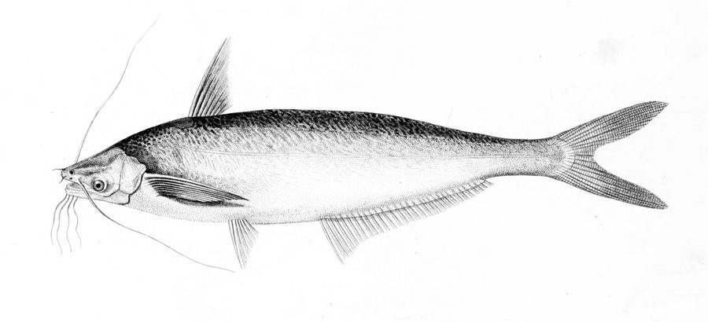

गरुआGarua Bachcha
Clupisoma garua · Schilbeidae · FSH-0042

- Scientific name वैज्ञानिक नाम
- Clupisoma garua (Hamilton, 1822)
- Family कुल
- Schilbeidae
- Hindi हिंदी
- गरुआ
- Local names स्थानीय नाम
- garua, garwa, garua bachcha
- Status here यहाँ की स्थिति
- native
- Movement आवागमन
- Resident, here all year
- Known from कहाँ दर्ज
- Others have published records from the wider Awadh–Purvanchal plain, none yet from Basti–Ayodhya अवध–पूर्वांचल से दूसरों के प्रकाशित अभिलेख, बस्ती–अयोध्या से अभी नहीं
- IUCN IUCN
- LC
- Review समीक्षा
- audited and independently read
When to look कब देखें
Present all year. साल भर मौजूद।
Uses and possibilities उपयोग और संभावनाएँ
Drawn from the documented uses in the profile below, where each is labelled traditional, current or a research lead. All uses →
Tell it apart from इनसे अलग पहचानें
गरुआ / Garua Bachcha
Clupisoma garua (Hamilton, 1822) — Schilbeidae
गरुआ — देसी कैटफिश जो तेज़ बहती गंगा और उसकी सहायक नदियों में पाई जाती है। लंबी दाढ़ी और चिकनी त्वचा। नरम माँस, अच्छे स्वाद की। तेज़ धारा की मछली, पत्थरों के बीच रहती है।
Quick Identification त्वरित पहचान
| Feature | Description |
|---|---|
| Size | 15–25 cm |
| Body | Elongate, slightly compressed; scaleless, slimy |
| Head | Somewhat depressed; mouth subterminal; very long barbels |
| Barbels | 4 pairs: 2 maxillary (very long), 2 mandibular |
| Coloration | Dark greenish-brown above; silvery-white below |
| Fins | Dorsal fin short; adipose fin present; caudal fin forked |
Field tip: A medium-sized catfish with very long barbels characteristic of fast-moving rivers. Found among boulders and rocks in flowing water. The long whisker-like barbels distinguish it from other catfish. Prefers well-oxygenated water.
हिंदी: लंबी दाढ़ी वाली कैटफिश; तेज़ नदी की मछली।
Morphology आकारिकी
Biometrics (river populations):
| Measurement | Range |
|---|---|
| Standard length | 15–25 cm |
| Weight | 50–150 g |
| Maxillary barbel length | 8–12 cm (very long) |
| Dorsal fin rays | 5–7 |
| Anal fin rays | 9–11 |
Body structure: Moderately elongate, slightly compressed, benthic form. Skin scaleless, covered with mucus. Body tapers posteriorly.
Head: Somewhat depressed; eyes small. The most distinctive feature is the presence of extremely long maxillary barbels extending far beyond the head. Mouth subterminal; equipped with fine teeth.
Coloration: Dark greenish-brown or grey on the back; sides greyish; belly silvery-white. Fins dusky.
Barbels: Four pairs total — two long maxillary barbels and two shorter mandibular pairs. The maxillary barbels are tactile and olfactory organs used for foraging in murky water.
Behaviour & Ecology व्यवहार और पारिस्थितिकता
A benthic, nocturnal catfish adapted to flowing water. Lives among boulders and in rocky crevices in rivers and fast streams. Uses long barbels to search for invertebrate prey and organic matter in rocky substrates. Tolerates high water flow and well-oxygenated water. Emerges at night to forage; hides in rock crevices during the day. Makes spawning migrations upstream during monsoon floods.
Life Cycle / Phenology जीवन चक्र
| Stage / season | Event |
|---|---|
| March–May | Slow growth; maturation progresses |
| June–August | Monsoon spawning migrations upstream |
| Eggs | Laid in rock crevices; parental care documented |
| Fry | Hatch in monsoon flood conditions |
| Sexual maturity | 2–3 years |
| Lifespan | 7–10 years |
हिंदी: बरसात में प्रजनन; ऊपर की ओर पलायन; पत्थरों में अंडे।
Host Plants or Prey आहार
- Benthic invertebrates: aquatic insect larvae, small crustaceans
- Small fish and fish eggs
- Detritus and organic matter
- Plant matter
Predators / Natural Enemies शत्रु
- Fish: Large catfish, snakeheads, and river dolphins
- Birds: Cormorants and diving ducks
- People: Hook and line fishing; night fishing with torches
Agricultural / Human Relevance कृषि प्रासंगिकता
Food. A valued food fish in eastern UP; sold at river-side fish markets. Meat is tender and flavourful. Often dried and salted for long-term storage.
Protection status. Protected under the Wildlife (Protection) Act 1972.
Cultural significance. Important fish in traditional fishing methods; hook and line fishing for this species is documented in old records.
Today. Still abundant in clean flowing rivers where habitat is preserved. Declining in polluted stretches due to habitat loss and water pollution.
हिंदी: अच्छी खाई जाने वाली नदी मछली। सूखा कर रखी जा सकती है। विधि अधिनियम 1972 के अंतर्गत संरक्षित है।
Expected Locally स्थानीय रूप से अपेक्षित
Not a field record. Written from published accounts for eastern Uttar Pradesh. No confirmed local sighting yet — if you have seen it, that is what the atlas needs.
अभी तक स्थानीय पुष्टि नहीं। यह विवरण प्रकाशित स्रोतों से है, किसी अवलोकन से नहीं।
GBIF holds published records from the wider Awadh–Purvanchal plain, none yet from Basti–Ayodhya. To be expected in faster-flowing sections of the Ghaghra and Rapti rivers and their tributaries. Most abundant during and after monsoon (July–November). Night fishing in rocky sections likely to yield records. A photograph or fresh specimen with place and date is a confirmed record.
Distribution वितरण
Global range: Native to the Gangetic system and other Indian rivers with fast-flowing sections.
In India: Throughout the Ganga and its fast-flowing tributaries, particularly in the foothills and plains.
In Uttar Pradesh: Found in clean, flowing rivers of the eastern plains.
In Basti district / eastern UP: Expected in the Ghaghra and Rapti rivers where water movement is present.
Research Questions शोध प्रश्न
Anyone can investigate these | कोई भी इन प्रश्नों की जाँच कर सकता है
- How are the long barbels used in foraging? — Observe behaviour in dark conditions with food items.
- What proportion of the diet consists of invertebrates versus detritus? — Stomach content analysis.
- Do they make seasonal spawning migrations, and if so, how far upstream? — Tag and recapture studies.
- How does water quality (oxygen levels) affect their distribution in rivers? — Correlation studies with dissolved oxygen.
- क्या बाँध निर्माण से इस मछली की आबादी प्रभावित हुई है? — Historical interviews and population surveys.
Similar Species मिलती-जुलती प्रजातियाँ
| Species | How to tell apart | हिंदी |
|---|---|---|
| Long-whiskered Catfish (Sperata aor) | Larger; more robust body; different barbel proportions | आर — बड़ी, मजबूत |
| Stinging Catfish (Heteropneustes fossilis) | Smaller; one pair of barbels only; venomous pectoral spine | एक दाढ़ी, विषैली |
| Gangetic Mystus (Mystus cavasius) | Smaller; three pairs of barbels; serrated spines | तीन दाढ़ी |
Field rule: A medium catfish with four pairs of very long, thread-like barbels (especially the maxillary pair) found in rocky flowing water is a Garua Bachcha.
Taxonomy & Classification वर्गीकरण
Original description. Described by Francis Hamilton in 1822 in An Account of the Fishes Found in the River Ganges and Its Branches. Originally placed in Silurus; transferred to Clupisoma by later authors. The genus name Clupisoma refers to the somewhat depressed head form.
Subspecies. Monotypic — no subspecies are recognised.
Family and order placement. Schilbeidae, the schilbeid catfish family; order Siluriformes. Clupisoma is a small genus of Asian catfish adapted to flowing water.
Phylogenetic notes. Clupisoma garua is a basal member of the Schilbeidae adapted to fast-flowing river habitats.
IUCN status rationale. Least Concern. Widespread in suitable flowing water habitat; populations stable where habitat is preserved.
Photo Gallery फोटो गैलरी
Photos needed आवश्यक फोटो
- [ ] Dorsal view showing four barbel pairs
- [ ] Lateral view of whole fish
- [ ] Head close-up showing long maxillary barbels
- [ ] In rocky habitat or fresh catch
No photos yet — add field photos to media/species/garua_bachcha/ and run node scripts/sync_photos.js.
References संदर्भ
- Hamilton, F. (1822). An Account of the Fishes Found in the River Ganges and Its Branches. Edinburgh University Press.
- Day, F. (1878). The Fishes of India, vol. 1. Williams and Norgate, London.
- Hora, S.L. & Pillay, T.V.R. (1962). Handbook of fish culture in the Indo-Pacific region. FAO Fisheries Biology Technical Paper no. 14.
- Talwar, P.K. & Jhingran, A.G. (1991). Inland Fishes of India and Adjacent Countries, vol. 1. Balkema, Rotterdam.
- IUCN Red List (2024). Clupisoma garua. IUCN, Cambridge.
- GBIF Occurrence Data — Clupisoma garua, South Asia (2026).
Source file: species/fauna/fish/garua_bachcha.md